Artifacts do not wear down like equipment does. Artifacts have might of their own. Unlike what you may have heard, artifacts do not 'belong' to specific captains—they should be used where the need best suits them. You should be swapping them around to best suit the situation.
Artifacts can be improved in two ways: artifact level and star level. Artifact level increases the power only. Star level increases the power and also gives random new powers when each star is complete. New bonus power can then be locked, unlocked, and swapped in and out to further customize the artifact. I will only cover the base powers here. When limited numbers of puzzle pieces are had, consider using pieces to upgrade to FULL stars and then using pieces to swap for yellow/orange bonuses. Alternating back and forth between full stars and getting yellow/orange bonuses for maximum efficiency with puzzle pieces.
Artifact Reference
| Image | Name | Nickname | Primary Level Power | Secondary Level Power | Primary Star Power | Secondary Star Power |
|---|---|---|---|---|---|---|
| 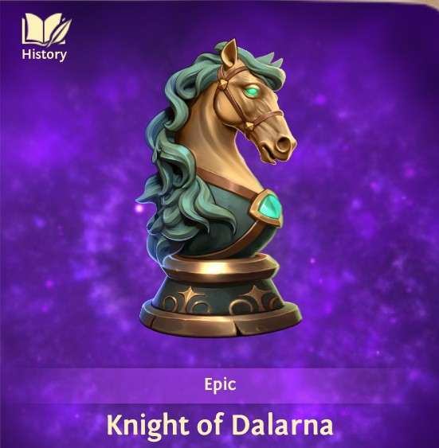 | Knight of Dalarna | Horse Artifact | Mounted Unit Health | Mounted Unit Strength | Mounted Unit Health | Mounted Unit Strength |
| 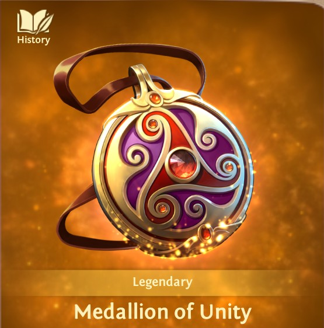 | Medallion of Unity | Medallion Artifact | Guardsman Health | xx | Guardsman Health | xx |
| 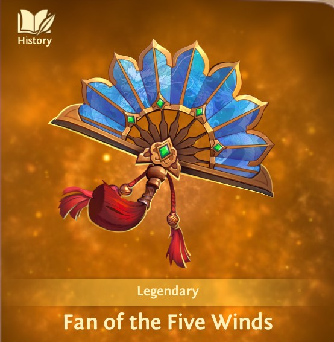 | Fan of the Five Winds | Fan Artifact | Guardsman Strength | xx | Guardsman Strength | xx |
 |
Thunder Drum | Drum Artifact | March Speed | xx | March Speed | xx |
| 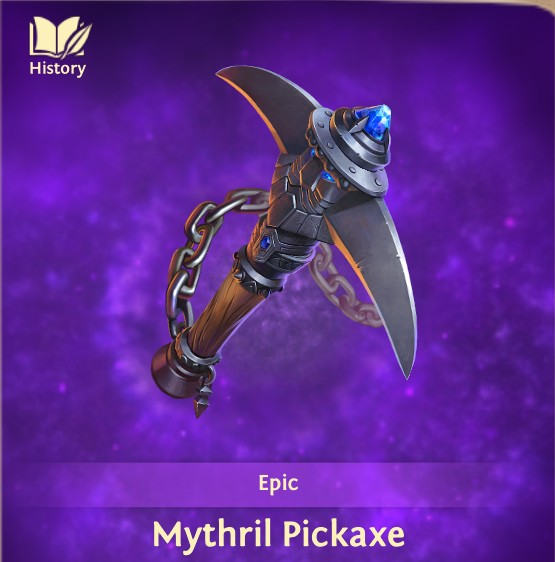 | Mythril Pickaxe | Axe Artifact | RSS Gathering | Army Carrying Capacity | RSS Gathering | Army Carrying Capacity |
| 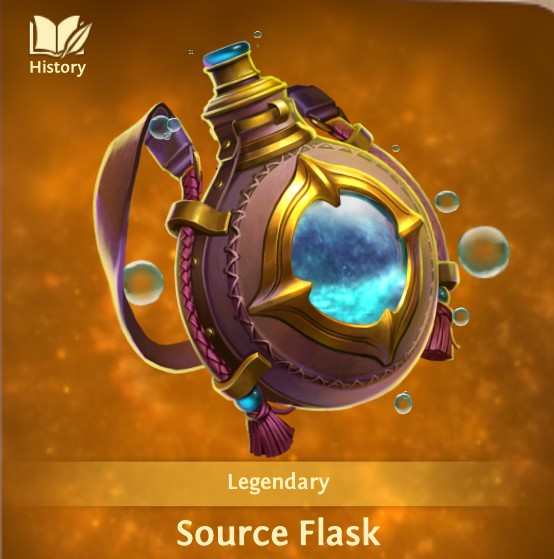 | Source Flask | Flask Artifact | Guardsman Strength | Guardsman Health | Guardsman Strength | Guardsman Health |
| 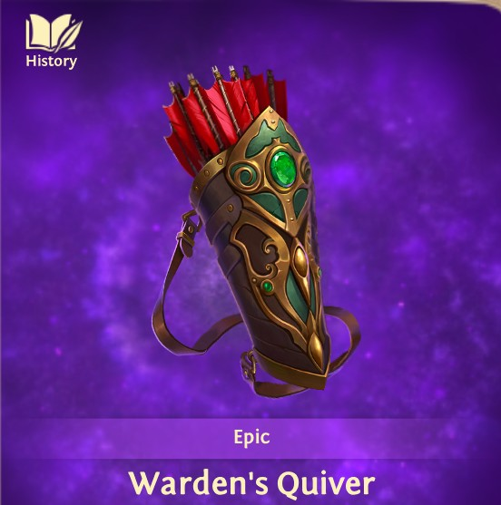 | Warden's Quiver | Quiver Artifact | Ranged Unit's Strength | Ranged Unit's Health | Ranged Unit's Strength | Ranged Unit's Health |
| 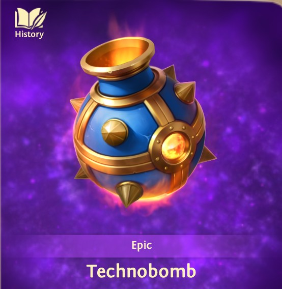 | Technobomb | Grenade Artifact | Engineer Corp Strength | Engineer Corp Health | Engineer Corp Strength | Engineer Corp Health |
| 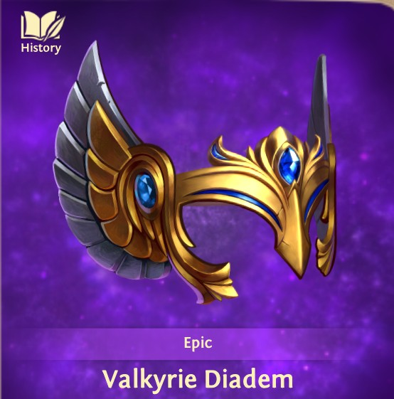 | Valkyrie Diadem | Flying Mask Artifact | Flying Unit Health | Flying Unit Strength | Flying Unit Health | Flying Unit Strength |
 |
Griffinwing Mask | Monster Mask Artifact | Monster Health | Monster Strength | Monster Health | Monster Strength |
| 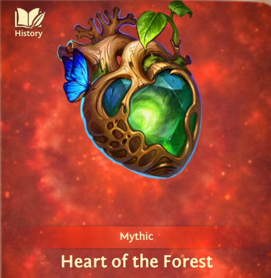 | Heart of the Forest | Heart Artifact | Army Strength | xx | Army Strength | xx |
| 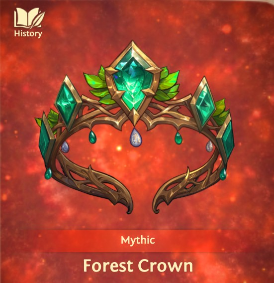 | Forest Crown | Crown Artifact | Army Strength PvP | Army Strength and Health | Army Strength PvP | Army Strength and Health |
| 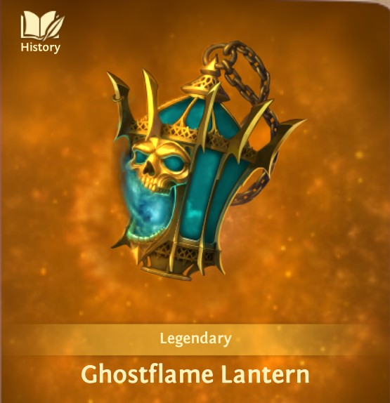 | Ghostflame Lantern | Lantern Artifact | Strength of army against Epic | xx | Strength of army against epic | xx |
| 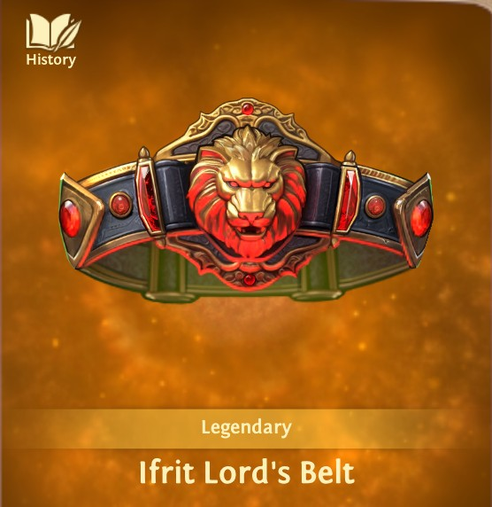 | Ifrit Lord's Belt | Belt Artifact | Army Health | Army Strength | Army Health | Army Strength |
| 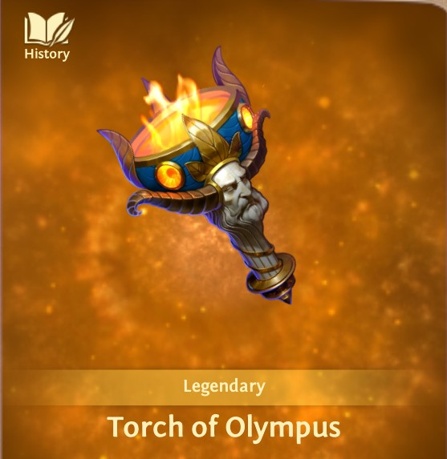 | Torch of Olympus | Torch Artifact | Crypt Exploration Efficiency | xx | Crypt Exploration Efficiency | xx |
| 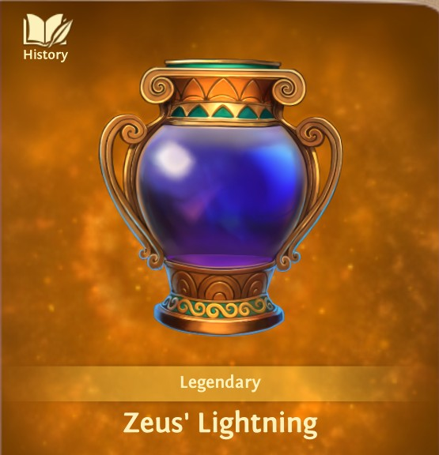 | Zeus' Lightning | Lightning Jar Artifact | Leadership | Dominance | Double Damage | Authority |
| 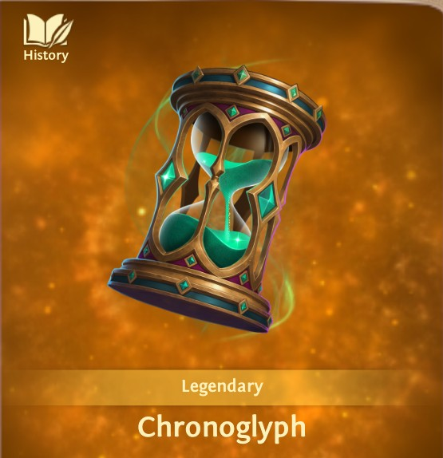 | Chronoglyph | Hourglass Artifact | Troop Training Speed | Food Production | Troop Training Speed | Food Production |
| 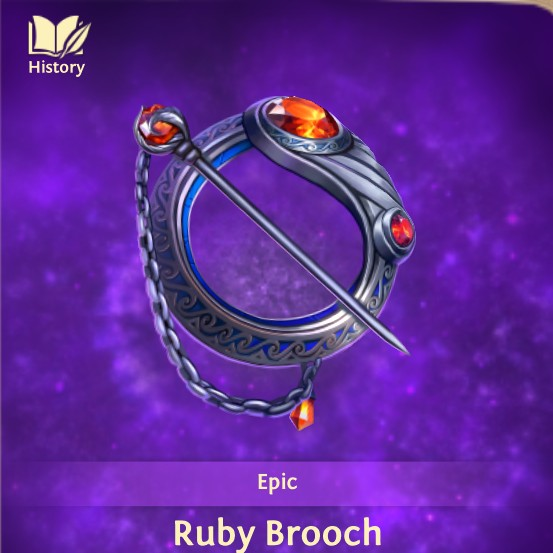 | Ruby Broach | Pin Artifact | Melee Unit Strength | Melee Unit Health | Melee Unit Strength | Melee Unit Health |
| 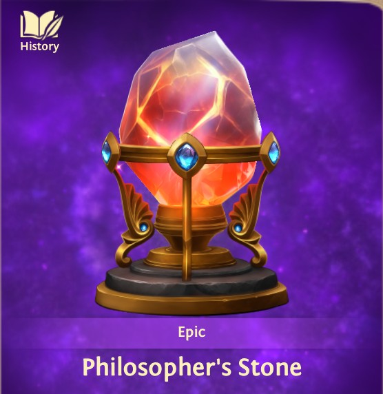 | Philosopher's Stone | Stone Artifact | Specialist Strength | Specialist Health | Specialist Strength | Specialist Health |
| 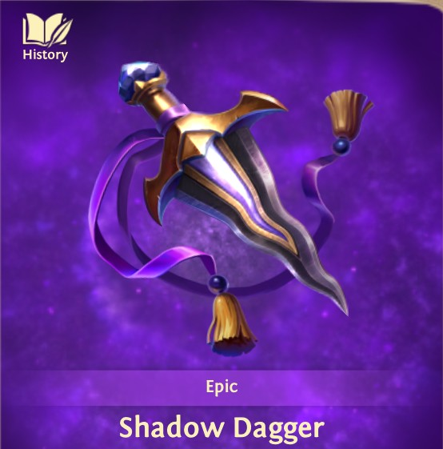 | Shadow Dagger | Dagger Artifact | Scout Strength | Scout Health | Scout Strength | Scout Health |
Applications for PvP and KvK
Content for PvP and KvK artifact applications can be added here.
Applications for Heroics (three captains)
First artifact on strongest captain should always be troop matched to Heroic. So, for example, if you are going against a lvl18 Heroic, you need the Horse artifact. If you are going against a lvl32 Heroic, you need the Pin artifact.
Second and third artifact should always be the highest STRENGTH boost combination of Crown, Heart, Flask, Fan, or Belt. The only exception to this is if the captains involved in the raid already have some absurd strength boost that overshadows the artifacts, in which case, you might want to swap one of those artifacts out for the Medallion in some rare cases for maximum efficiency.
Applications for Epics (single Captain)
- Best option: Lantern Artifact
- Second Best: highest strength boost of Heart, Crown, Belt
- Third Best: highest strength boost of Flask, Fan
- Notable Option: If you want to stack like crazy, you can use the Jar and build a very large bonus round
Applications for Epics (three captains)
The theoretical best combination is Lantern, Heart, Zeus. Most players won't have that early on, so Lantern, Heart, Belt is a close second if you don't have Zeus yet or it's not leveled up properly.
Without those combinations, the logical best is sum total boost to total strength and increased leadership with balanced health metrics. In this case, buffing health of one unit type actually hurts the attack.
Applications for Crypt Exploration
- Best: Torch
- Second Best: Drum
RSS Harvesting within Kingdom (single captain)
Axe Artifact (Stror)
RSS Harvesting in other Kingdoms (combination of three captains)
If Using Portal:
- Axe Artifact
- Pin Artifact
- Crown or Heart or Flask or Fan or Belt (depending on level, stars, and bonus powers)
If marching:
- Axe
- Drum
- Pin
If you are taking the resources to march all the way to another kingdom for RSS, you should be using a only maximum leadership full of spearmen to gather an already destroyed target. These artifact optimizations are designed around a coordinated attack where the leader is optimized to take out the target and subsequent attacks are designed for maximum RSS gather. Combination Attack and RSS approach is not efficient and would not use this combination of artifacts.